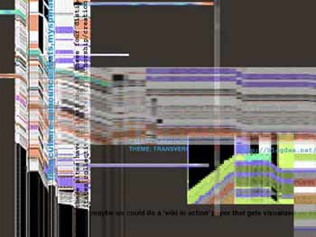

|

How do new thoughts form through distributed media? What are the collective dynamics through which these thoughts assemble? This presentation will use a combination of dynamic software from wikis through mapping to vj software to explore the processes through which new concepts emerge transvergently from collective practice. In assembling the texts and visualizations in this presentation, we do not wish to finish the process of collaborative thought production but rather shift it into another phase – to construct open machines that nurture collaborative authoring, technozoosemiotic processes, technozoomorphic forms and transvergent networks.
Distributed media has emerged recently as an umbrella term for a new generation of wireless and mobile communications. Yet what the term distributed foregrounds is the ubiquitous networked and collective engagement with media. For the last decade and a half, distributed media technologies have been accompanied by a wide-ranging, spatial and temporal experimentation, This experimentation has created a technozoosemiotic "ether" within which diverse and rapidly mutating semiotic forms, along with diverse transvergent practices, have drawn breath. Although wild claims for the ways in which digital media might alter both culture and consciousness were made throughout the 1990s, it is not until more recently that specific softwares and emergent practices have appeared in concrete and widespread forms. The latter include a range of dynamic textual, audio and visual software– wikis, Vjing software, visualization of collaborative and dynamic text authoring, for example.
This presentation proposes to use a combination of these interfaces to explore the processes through which new concepts might emerge transvergently out of collective practice. It presents a dynamic diagram of new "ethers", shifting technozoosemiotic processes, technozoomorphic forms and practices appropriate to transvergent networks. It asks questions about the dance of thought, signs, technologies and practices within these new contexts.
"act" will begin with a series of text-based distributed media six months prior to ISEA06. Using a wiki, archives of a listserv postings and sets of email correspondences conducted between the two presenters, “act” will set out to initiate distributed discussion between new media artists and theorists in the Australasian region. The discussion will begin by focussing on collaborative authoring, technozoosemiotic processes, technozoomorphic forms and transvergent networks. We will collect these texts. Using software such as ‘Theme River’, ‘ThinkMap’ and ‘historyflow’, we will then ‘map’ the dynamics of author contribution, topic and the intensity of revision to ideas that these distributed texts have undergone. Here, we intend to use the visualization software to highlight moments of transition in a text as one idea or concept emerges, gains ground or fades away. Against the rather crude theory of memes which attempted to account for thought, style and cultural artifacts in terms of biological metaphors, we propose that ‘act’ will foreground the complex, social and technical ecologies engaged in producing a thought. We assert that thought is not simply the end-product of a homogenous collective effort but the differential emergence of transvergent collective action. Here, practices of thinking include human and nonhuman (including machines) engagement in which difference or novelty emerges immanently from the terrain of their networked relationships.
We hope to show that an assemblage performs more work than tying thoughts together; it is not systematic like an encyclopaedia or a multimedia dictionary. An assemblage is not itself a collection of atomized units; it is not a synonym for mobs or communities. An assemblage is not simply a distribution point; it is not the sender-end of messages beamed out across communication channels. Instead, assemblages are produced by machines – thought machines, matter machines, socio-technical machines. All these machines cut across the flow of their materials and across the intersecting vectors of these material flows.
It follows that in assembling the texts and visualizations in this presentation, we do not wish to finish the process of collaborative thought production but rather shift it into another phase – to construct open machines of thought-assemblage that nurture collaborative authoring, technozoosemiotic processes, technozoomorphic forms and transvergent networks. In presenting this thought-assemblage, we will take edited animations of the texts, visualizations and cross-processed audio incarnations of the texts into a virtual vision-mixing console (such as Neuromixer) and remix the material in real time. This will involve a measure of rehearsed presentation and some live sampling and inmixing of the prepared digital video. The effect will be to ‘vj’ the paper in order to push the thought to its maximum surface of interface between its human authors and their technical counterparts. The presentation will therefore explore processually the moments of attack and decay that envelop the production of distributed and collective thought. |